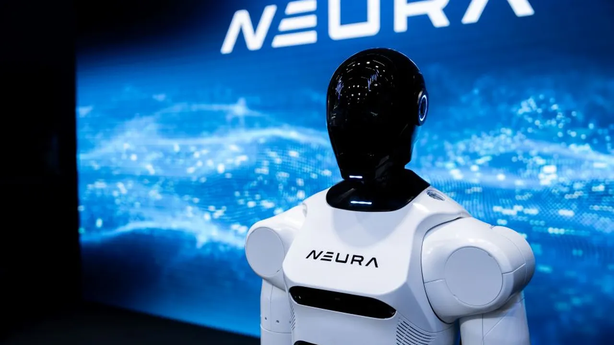
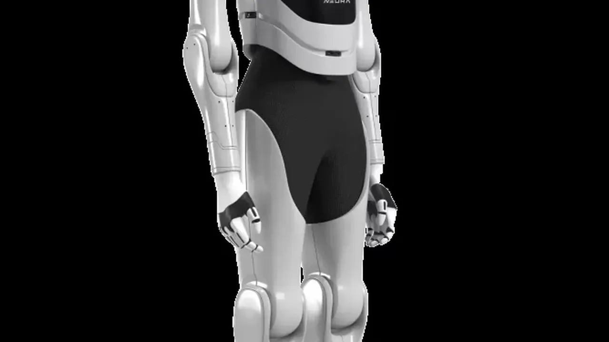

NEURA Robotics launches Neuron AI, the “brain of the physical world” — robots that see, hear, feel, and remember
NEURA Robotics introduced on Wednesday Neuron AI, a multimodal foundation model for what the company calls “Physical AI”. The model combines 3D vision, touch, audio, robot state and language with memory in a Perception-Language-Action (PLA) architecture that ties what a robot sees, hears and feels to what it has already done — so a robot can react to what its cameras cannot see, and remember objects after they leave its view.
Beyond vision
NEURA’s argument starts with the limits of cameras: they capture geometry, color and position, but no information about contact, force or sound. People don’t work by sight alone — they feel whether a screw has caught and hear when a connector clicks into place. Neuron AI applies the same principle to robots. Rather than treating each sensor as a separate input, the model encodes 3D vision, tactile and force data, audio, robot state and language, aligns them in one shared space over time, and turns them into a single stream of action, according to the company’s announcement.
The extra senses matter most for tasks cameras can’t solve alone. When a robot opens a lock, only sound and touch confirm it is really open; touch lets a robot grasp objects hidden from view. They sharpen vision-led tasks too: in welding, the sound of the process can indicate the quality of a seam. Coverage of the launch notes how NEURA positions this against vision-language-action (VLA) models, which the company says are optimized for motion and reason mostly on the current camera frame — Neuron AI, NEURA says, covers that ground while adding touch, sound and memory.
A memory for the physical world
The model carries a memory function for what NEURA calls object permanence: the ability to remember objects when they leave view, which humans acquire in their first two years of life. A robot in a continuous physical world must track objects and the consequences of its own actions over time, often while not seeing them. NEURA says it adapted the architecture specifically to introduce memory and trains it on dedicated datasets built to use it.

Three data pillars, five robot bodies
Neuron AI is trained on three complementary sources of physical experience. Real-world robot data comes from robots performing tasks in the NEURA Gyms — the company’s training infrastructure for cognitive robots — and in real-world settings, producing synchronized streams of vision, touch, force, audio and movement data. Simulation-amplified data broadens that with simulated variations of tasks and environments via NEURA’s Data Amplifier. Human demonstration data comes from people wearing sensor-equipped data suits, carrying human movements and practical expertise into training.
The three pillars train one shared foundation across five NEURA robot embodiments with different grippers and hands: the 4NE-1 Gen 3, 4NE-1 Gen 4, a wheeled 4NE-1 and two further bimanual platforms. One model, every body — NEURA also lists its MAiRA, MiPA, MAV+ and 4NE1 robots as the family the model is trained and deployed across.
Local on the robot, tuned per fleet
Neuron AI runs locally on the robot itself: decisions are taken in real time on the robot with no server round trip, it keeps operating even without a cloud connection, and production data stays under the customer’s control — a point NEURA frames as key for manufacturers in Europe. Within the NEURA Gyms, data collection, skill training and benchmarking are connected ahead of deployment, and the platform Neuraverse then deploys and updates capabilities across robot fleets, giving customers tools to fine-tune the model for their own tasks. Customers’ skills can remain private; where they choose to share, those contributions can support the wider ecosystem.
The company’s central metric is Time-to-Skill: how quickly a robot learns a new task and performs it reliably. For industrial customers, NEURA argues, shortening that time is what opens Physical AI to more processes and changing requirements.

Built in Germany, demoed at GTC Berlin
Development and training took place in-house in Metzingen, Germany, where NEURA says it keeps robots, hands, sensing technology, data infrastructure and AI development under one roof, alongside data partnerships with industrial companies including Schaeffler and Bosch. “An intelligent robot needs a brain that brings its senses together and remembers what happened,” said founder and CEO David Reger. “With Neuron AI, we are building the brain of the physical world.”
The model’s public debut is set for NVIDIA GTC Berlin 2026: the humanoid 4NE1 (“For Anyone”) will perform an eleven-minute laundry-handling sequence — sorting laundry, loading a washing machine, closing and reopening it, unloading it and moving the laundry to a dryer — without human intervention. The difficulty, NEURA says, is beyond any single movement: the robot must carry relevant context through the whole sequence, finish each step and move on to the next. Visitors can see it at Station-Berlin, Hall 3, Booth #3031, from October 20 to 22.
What we don’t know yet
No benchmark numbers, pricing or availability were disclosed in the announcement or the coverage so far, and there is no independent validation yet of the multisensory or memory claims beyond NEURA’s own description. The GTC Berlin demo is the first chance to watch the model handle a long-horizon task in front of a crowd. Still, the positioning is sharp: Physical AI is a race between vision-led labs and whoever can make touch, sound and memory count — and a German robotics company just planted its flag.